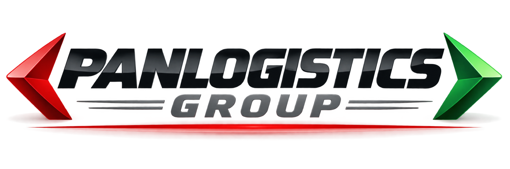

Diligencias de hoy
0Registros para hoy
Acceso al sistema
Ingrese con sus credenciales autorizadas
PANLOGISTICS GROUP, S.A.
Control de Diligencias
i
Los registros se guardan en una base de datos compartida y se consultan desde los dispositivos autorizados. Se requiere conexión a internet para guardar o actualizar la información.
Registro operativo · Acceso autorizado desde celular y computadora
📍 Compartir mi ubicación
Activa el seguimiento cuando comiences tu jornada. Puedes detenerlo cuando quieras.
El navegador solicitará permiso. Mantén esta página abierta para continuar compartiendo.
Panel de control
Resumen operativo de PANLOGISTICS GROUP, S.A. ·
Finalizadas
00% del total visibleEn proceso
0Con comienzo registradoPendientes
0Esperando comienzoProductividad de los últimos 7 días
FinalizadasPendientes / en curso
Últimas diligencias
| Fecha | Destino | Colaborador | Estado | Acción |
|---|---|---|---|---|
| Cargando diligencias… | ||||
Horas registradas0.00Horas acumuladas
Viáticos registradosB/. 0.00Total de registros cargados
Acceso al sistemaSeguro y autorizadoPermisos según el rol del usuario
🏅 Rendimiento y bono de productividad
Jhonatan Valencia · Bono calculado según la evaluación quincenal
★ Puntuación quincenal—Promedio de la evaluación de la quincena
💰 Bono de productividad—100% = B/. 75.00 por quincena
Nueva diligencia
◆ Diligencias0
Horas0.00
Viáticos B/.0.00
Historial compartido
Registro de combustible
Registre el abastecimiento en galones y precio por galón. El sistema calcula el costo estimado del abastecimiento.
Costo estimado (galones × B/. por galón)B/. 0.00
Abastecimientos registrados
Evaluación por diligencia
Cada diligencia recibe una evaluación individual. Ponderación: Cumplimiento de diligencia 40% · Responsabilidad 35% · Comunicación 20% · Uso de recursos 5%.
Nueva evaluación
Evaluación ponderada
0.00 / 100
Diligencias pendientes de evaluación
Evaluaciones registradas
Cobertura de evaluación
Incidencias
Incidencias registradas
Configuración de metas
Solo ADMIN puede modificar estos parámetros. Los valores se guardan en la configuración central y son utilizados por los cálculos de productividad.
Cantidad objetivo de diligencias por día.
Tiempo objetivo promedio por diligencia.
Puede dejarse vacío hasta contar con suficientes datos reales para establecer una meta.
Administración de usuarios
ADMIN puede cambiar rol y estado de perfiles existentes. La creación de la cuenta de acceso se realiza en Supabase Auth; al crearla, el sistema genera automáticamente su perfil como OPERADOR.
| Usuario | Correo | Rol | Estado | Acción |
|---|
📍 Seguimiento GPS de operadores
Ubicaciones compartidas voluntariamente por los operadores.
Consultando ubicaciones…
Últimas ubicaciones registradas
Cargando historial…
🚚 Control semanal · Hino AT8811
Control digital de recepción y devolución. Completa cada etapa, toma las fotografías desde la cámara y consulta los controles anteriores.
1 · RETIRO
Registrar quién recibe, kilometraje, combustible, estado y cuatro fotografías actuales.
2 · ENTREGA
Seleccionar un control pendiente, registrar devolución y tomar cuatro fotografías nuevas.
3 · HISTORIAL
Consultar controles semanales, estado de cierre y evidencia fotográfica.
2. Entrega del camión
Completa al devolver el vehículo.
Estado general al entregar
Fotos de devolución0 de 4 capturadas
Toma cuatro fotografías nuevas al devolver el camión. No se reutilizan las imágenes del retiro.
Historial de controles semanales
Cargando registros…
🖨️ Reporte independiente del camión
Este reporte pertenece exclusivamente al control semanal del Hino AT8811. No forma parte del reporte quincenal de productividad.
Al guardar el primer retiro, aparecerá aquí para generar su reporte con fotografías y datos.
Resultados mensuales
Selecciona un mes y un mensajero para consultar el resultado.
Reporte quincenal de productividad
Formato Carta · vertical · listo para imprimir o guardar como PDF. La quincena se calcula como días 1–15 o 16–fin del mes.
Al elegir “Imprimir / Guardar PDF”, seleccione Guardar como PDF en la ventana de impresión.
Seleccione mes, quincena y mensajero para generar el reporte.
Exportar registros
Exporta los registros visibles según el filtro del historial.
Importar respaldo JSON
Combina registros de un respaldo previo. Los registros existentes pueden omitirse.